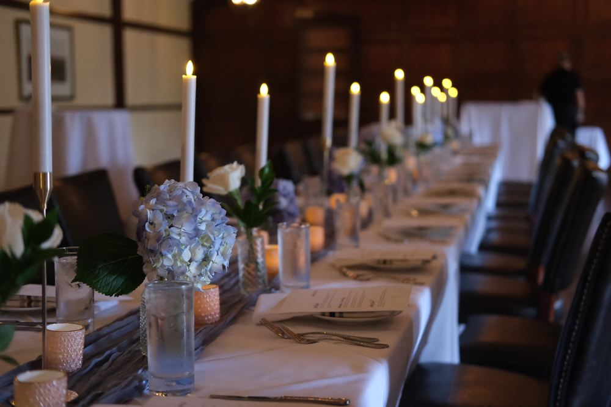
Private dining rooms
Dine in the original 1757 rooms, the Main Dining Room or beside the Forge fireplace. Private rooms are available for lunch, dinner and brunch, Monday through Sunday.
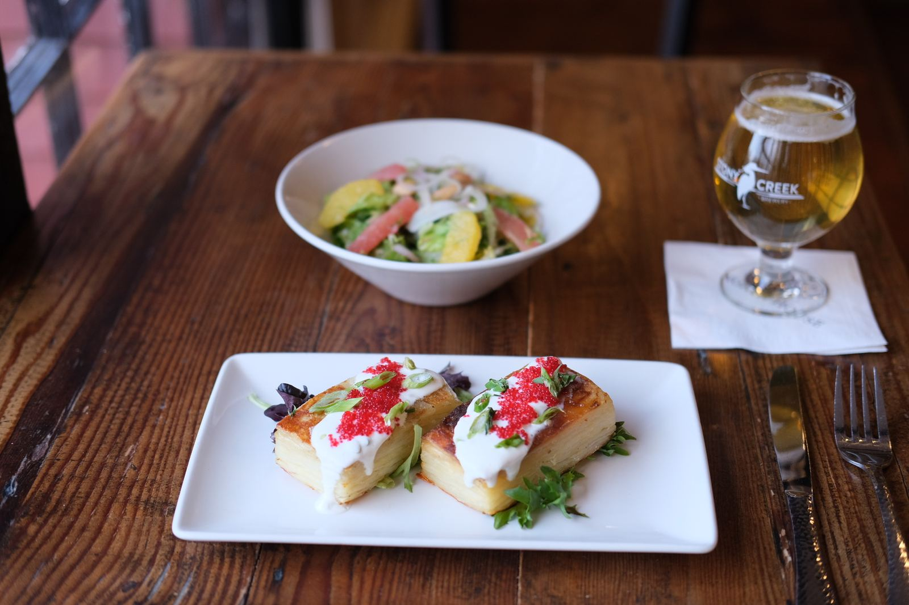
Exceptional modern American cuisine, inspired and sourced from the ingredients of New England.
1 Nod Road · Avon, Connecticut
Since 1678
Thomas North settled this land at the Nod in 1678.
The Forge Room
Joseph North’s 1832 blacksmith shop, fireplace and all.
The Belle Ballroom
Weddings and banquets for up to 200 guests.
4.4 on OpenTable
From 1,028 diner reviews, checked November 23, 2026.
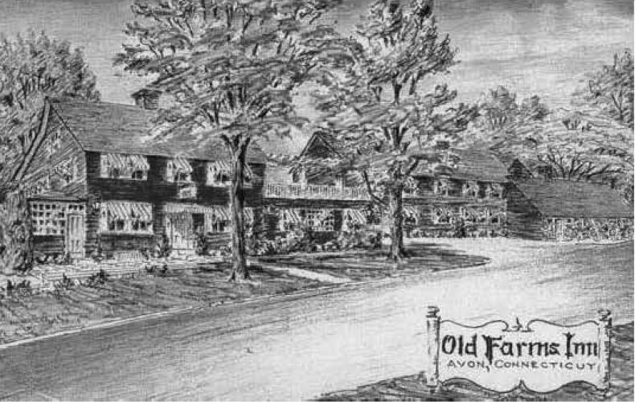
Thomas North settled this land in 1678. His son Nathaniel built his home here in 1757, and those rooms are still the foyer, the lobby and the Private Dining Room. In 1832 Joseph North, the blacksmith, rebuilt his shop in stone. Today it is the Forge Room, with the longest continuously operating fireplace in Connecticut.
For nearly a century the homestead was the Old Farms Inn. In 2015 the Chabot family, owners of Farmington Gardens, bought the property and named it The North House to honor its first settlers. The family runs it every day.
Everything is made fresh in house daily. We take your favorites and make them better. Where else can you find Beef Wellington in the Farmington River Valley?
Gather in the historic house’s private rooms, or celebrate in the Belle Ballroom next door.

Dine in the original 1757 rooms, the Main Dining Room or beside the Forge fireplace. Private rooms are available for lunch, dinner and brunch, Monday through Sunday.
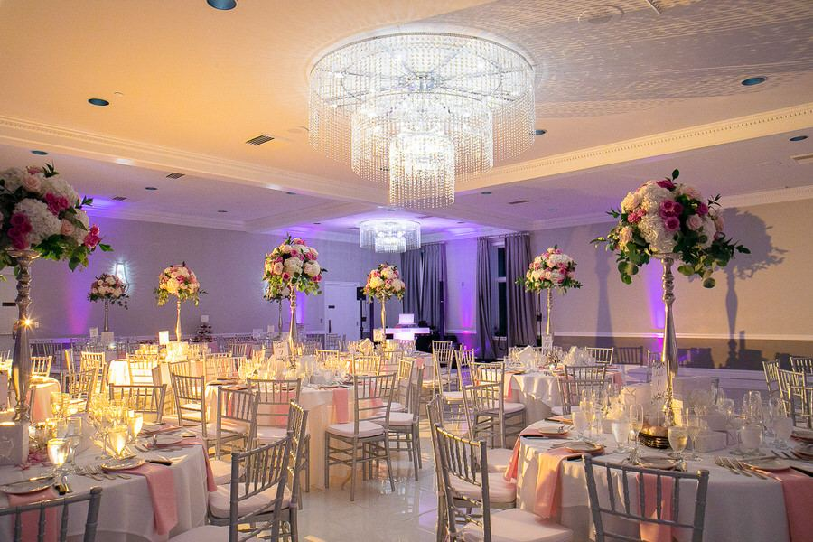
Named for longtime owner Belle Young. Up to 200 guests, marble floors, crystal chandeliers, a bridal suite and a terrace. The ballroom hosts only one major event per day.
“The North House has some of the most amazing food we have ever had a wedding! Our bartenders were super friendly and amazing to work with!”
“This venue was everything I could ask for And more. They were so helpful throughout the entire planning process, Tracey is incredible. The food was outrageous, it was the best food I ever had at a wedding! Everything was well organized, easy, and very, very reasonable as far as price. I would recommend this venue to anyone getting married!”
“The North House made my wedding a dream come true. The staff was amazing, the food was great and Tracy our event planner was fantastic! From our rehearsal dinner to the amazing reception, we cannot thank The North House enough!”
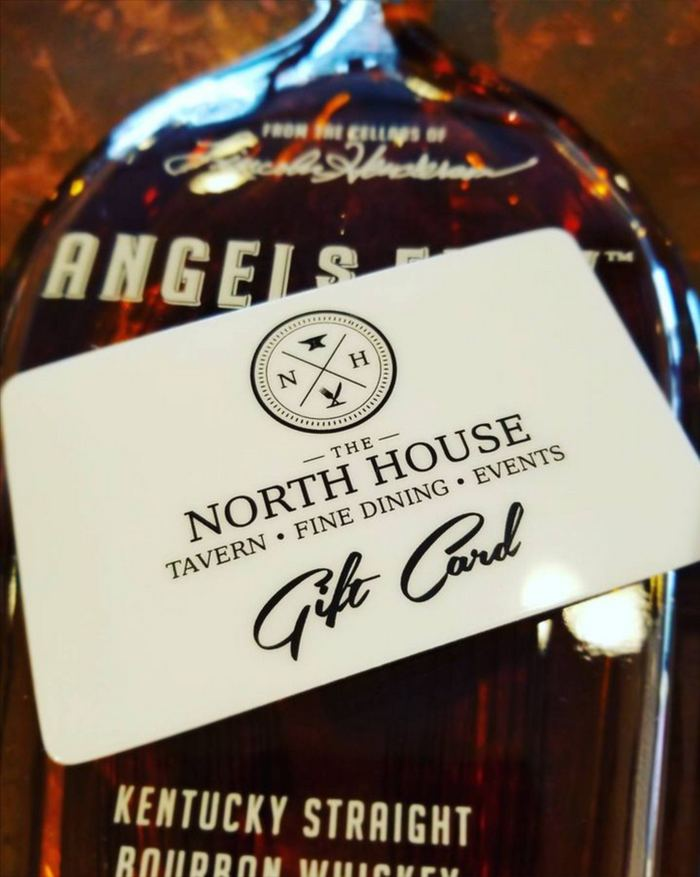
Give dinner at The North House. Buy an e-gift card online or call 860-404-5951.
Buy a gift card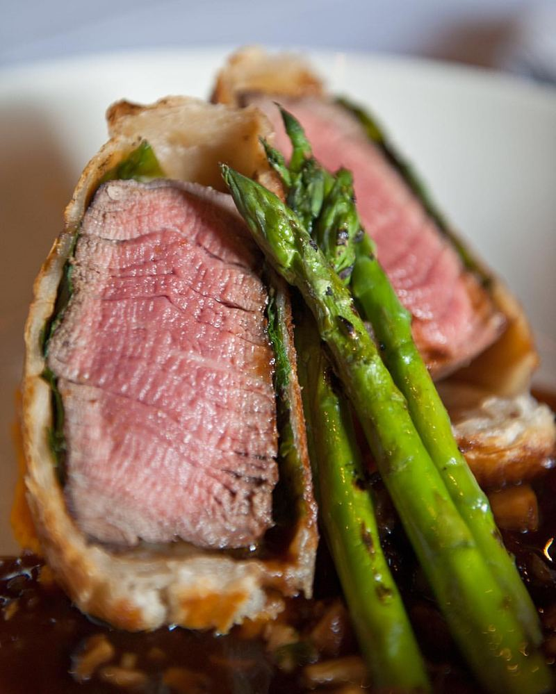
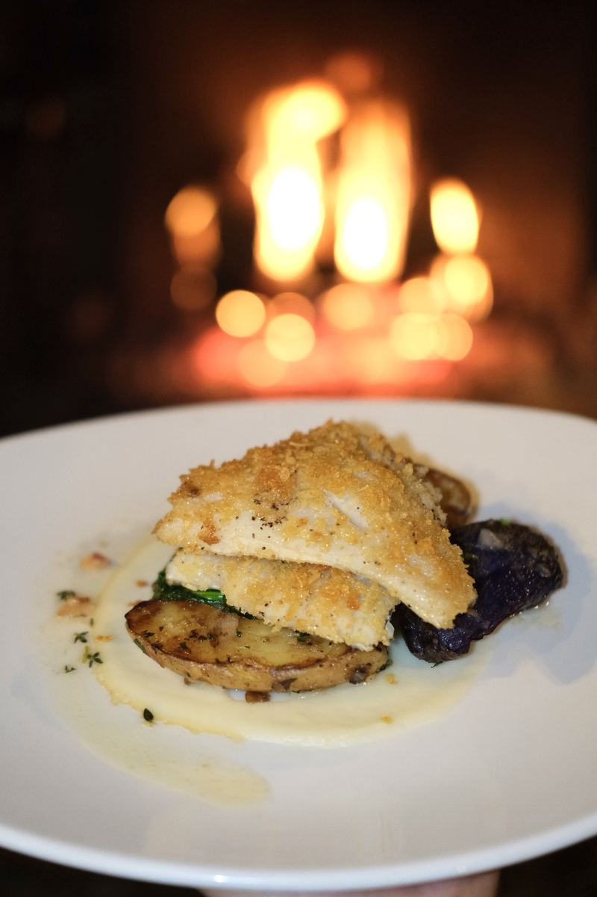
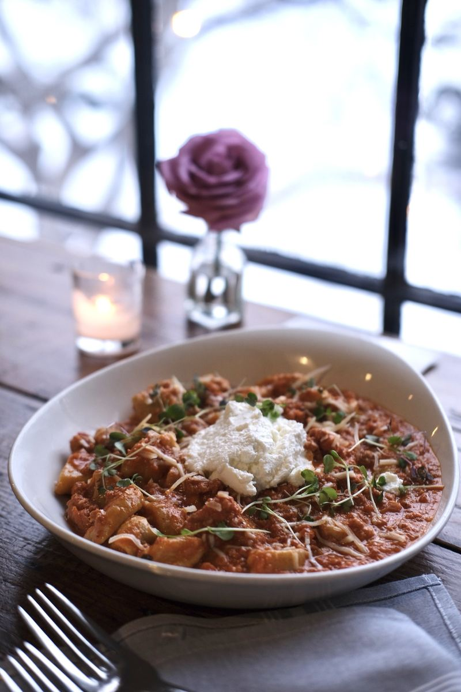
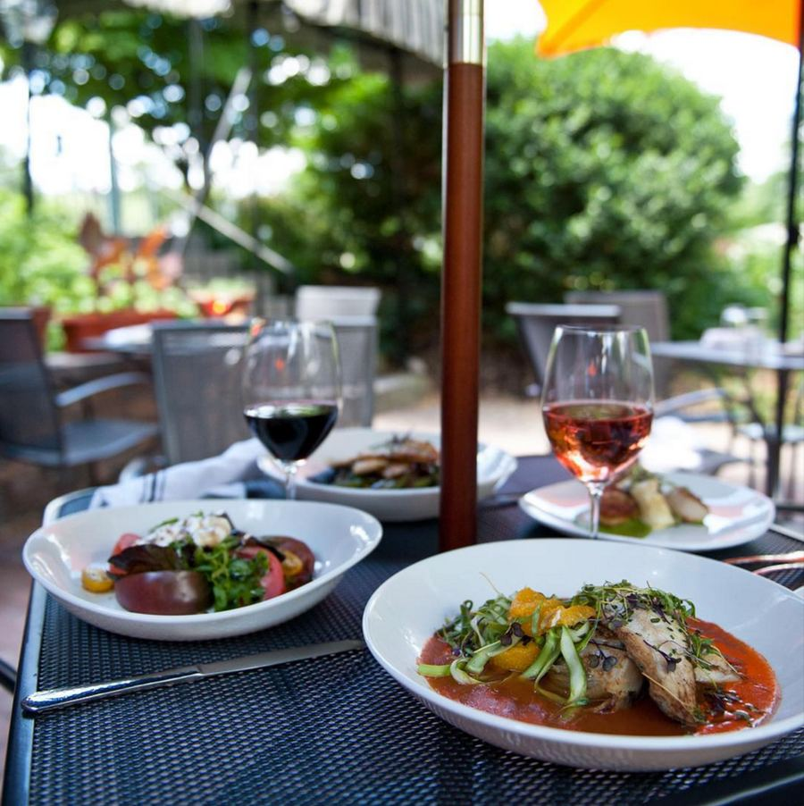
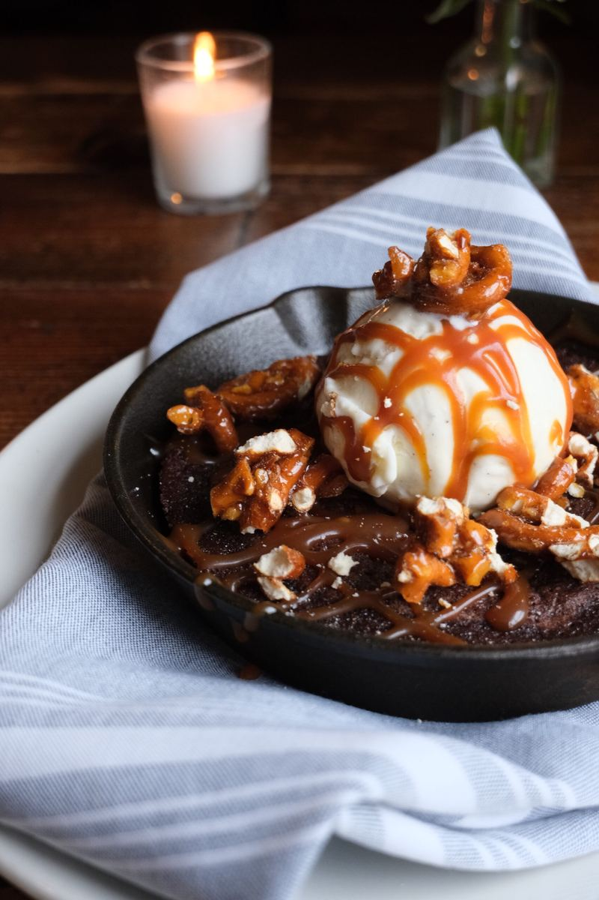
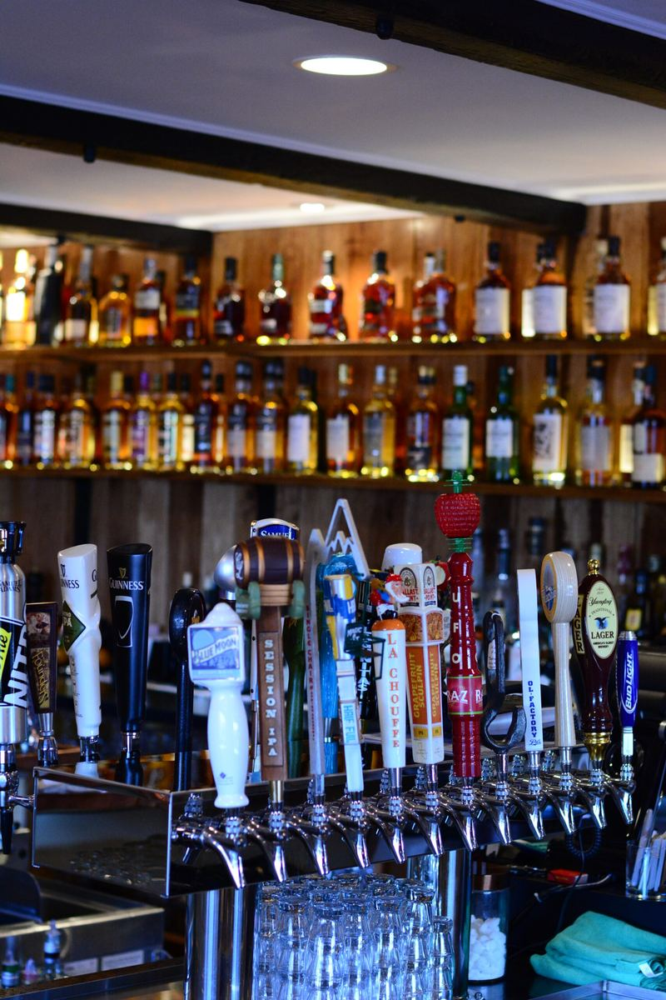
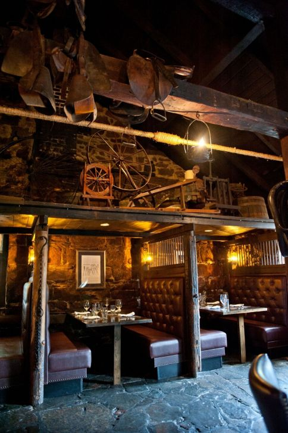
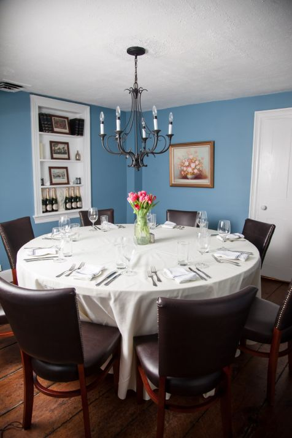
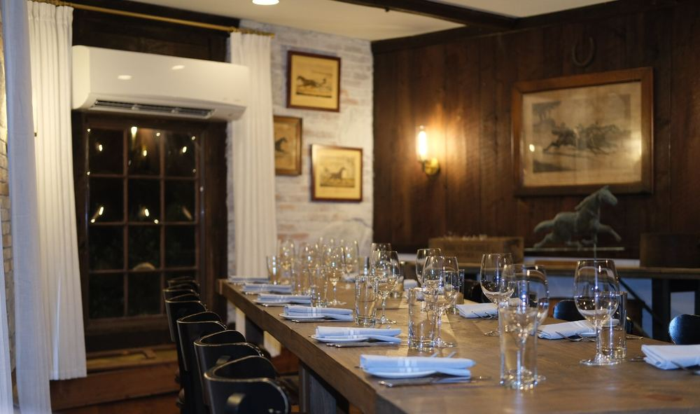
Off Route 44, on a six-acre property.
Planning an event? Request a date · Wedding pricing · Event pricing
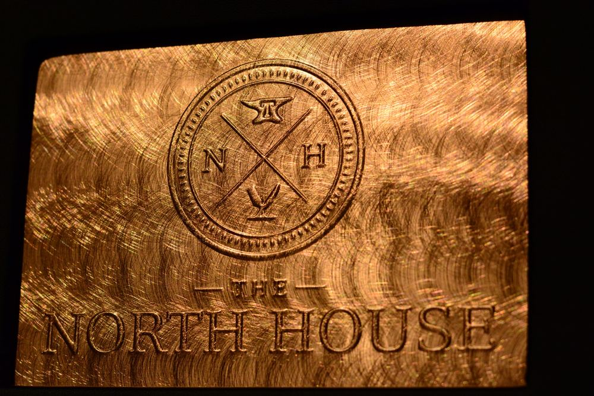
This website is a simple set of information pages. It has no forms, sets no cookies and uses no analytics, advertising or tracking tools. We do not collect any personal information through it.
The fonts and images on this site are stored on this site itself, so loading a page does not send your visit to a font or image service. The site is hosted on GitHub Pages, which may keep standard technical logs such as IP addresses.
Some links take you to other services: OpenTable for reservations, Toast for online orders and gift cards, Tripleseat for event requests, Google Maps for directions, and Facebook and Instagram. Those services have their own privacy policies, which apply once you leave this site.
Questions? Call us at 860-404-5951.